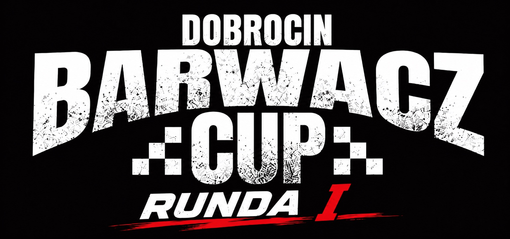

AKR WYNIKI LIVE 2.0
WYNIKI RAJDÓW
Wyniki na żywo, klasyfikacja sezonu i archiwum imprez rajdowych.
ARCHIWALNE IMPREZY
Wybierz rundę, aby zobaczyć jej wyniki.

RUNDA I
ZOBACZ WYNIKI →

RUNDA II
ZOBACZ WYNIKI →

RUNDA III
ZOBACZ WYNIKI →

RUNDA IV
ZOBACZ WYNIKI →

RUNDA V
ZOBACZ WYNIKI →
WKRÓTCE

RUNDA VI — FINAŁ
12 GRUDNIA 2026
RAJD CHARYTATYWNY ❤️
Osobna impreza w archiwum wyników AKR.

JEDZIEMY DLA WIKTORII 2 ❤️
ZOBACZ WYNIKI RAJDU →
Wyniki rund I–V oraz rajdu charytatywnego
są dostępne przez osobną podstronę wyników.
Runda VI zostanie udostępniona po rozegraniu finału.